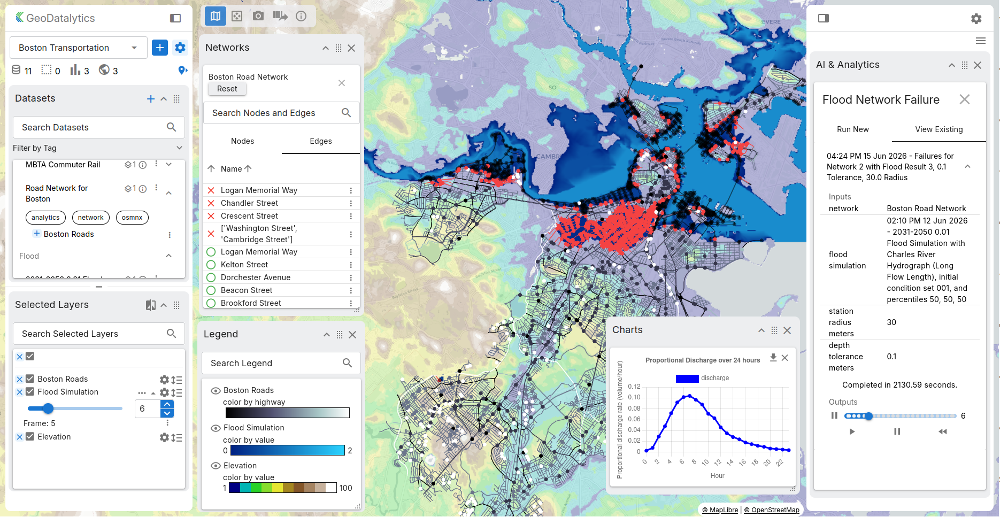

GeoDatalytics is a web-based platform designed to enable AI-driven analytics and simulation in urban environments. It empowers analysts, planners, and data scientists with the tools they need to ingest, explore, simulate, transform, and visualize complex urban data—all in one integrated environment.

GeoDatalytics can support diverse use cases related to urban environments, enabling comprehensive data visualization and simulation capabilities that enhance the resilience of infrastructure and foster sustainable urban solutions.
Key Capabilities
- Scenario-based analytics: explore flood impact analysis, transportation disruption, infrastructure risk assessment, etc.
- AI & simulation workflows: run pretrained models on geospatial and network data to generate actionable insights
- Interactive visualization: explore multiscale results through interactive maps, custom layer styling, and side-by-side comparison
- Multi-source data integration: ingest vector, raster, and tabular data representing roads, utilities, floods, amenities, elevation, satellite imagery, sensor data, etc.
- Collaborative project management: configure your projects to include relevant datasets, set permissions for your collaborators, and save informative views for others to see your results